基于语言模型提示（Prompting）的推理：综述
该综述系统梳理了'用提示激发 LLM 推理'这一方向：针对相关方法散落在各类任务、缺乏系统分析的问题，作者提出了该方向的首篇综述，将方法分为 Strategy Enhanced Reasoning（prompt engineering 的单/多阶段提示、self/ensemble/iterative 过程优化、Physical Simulator/Code Interpreter/Tool Learning 等外部引擎）与 Knowledge Enhanced Reasoning（implicit/explicit knowledge prompting）两大分支。文章从模型规模与提示来源（人工构造、LM 生成、检索）等维度横向比较，核心结论包括：CoT prompting 只在约 100B 以上大模型上有效、属规模涌现能力；相同规模下 Codex 显著优于 GPT-3，代码预训练可能触发推理能力；高质量推理 rationale 是关键。文中还梳理了算术/常识/逻辑/符号/多模态推理基准与 LangChain、EasyInstruct 等开源资源，并指出高效推理、鲁棒可信推理等未来方向。对团队而言，这是一份提示工程与推理提示方法选型的地图式参考。
通过 prompting 激发语言模型推理能力的工作（如 CoT、generated knowledge prompting 等）散落在各类 NLP 任务中，此前未被系统性梳理与分析。本文要回答：有哪些用 prompting 增强 LLM 推理的方法、如何分类与比较、推理能力为何随规模涌现、有哪些基准与资源、未来方向是什么。
提出两分支分类法：(1) Strategy Enhanced Reasoning——prompt engineering（single-stage 与 multi-stage 提示，如 CoT、'Let's think step by step!'、问题分解）；process optimization（self-optimization 校准器/过滤器、ensemble-optimization 多数投票与 step-aware voting verifier、iterative-optimization 用生成的 (Q,C,A) 三元组微调与自我反思）；external engine（Physical Simulator 生成提示、Code Interpreter 将推理与计算解耦如 PoT、Tool Learning 在文本生成中植入工具 API 调用）。(2) Knowledge Enhanced Reasoning——implicit knowledge（用 LM 自身生成知识/rationale 作为提示、知识蒸馏到小模型）与 explicit knowledge（检索外部语料与示例作为提示，如基于策略梯度的动态提示检索、按 CoT 推理步骤检索知识、多步任务中持续检索 wiki 文档）。并从模型规模、提示来源等维度做横向比较，梳理推理基准与开源资源。
综述性论文，未开展统一的新实验；其汇总的关键实证观察：当模型规模降至 100B 以下时，CoT prompting 不再带来性能提升甚至有害（基于 GSM8K 算术推理上 CoT 实验结果的分析）
相同参数规模下 Codex 显著优于 GPT-3，作者推断代码预训练不仅带来代码能力，还可能触发 CoT 推理能力
PaLM-62B 在算术推理上优于 LaMDA-137B，作者推测涌现能力并非仅由参数规模决定，还与预训练语料质量相关
CoT prompting 下 PaLM-540B 提升最大（GSM8K 与常识推理基准）
ChatGPT 案例测试：GSM8K 与 CommonsenseQA 样本回答正确，Last Letter Concatenation 失败，说明其符号推理能力相对较弱
据作者称是该方向首篇综述（'the first survey of recent progress in reasoning with language model prompting'）。区别于已有的 LLM 推理综述、in-context learning 综述与 Tool Learning 综述，本文聚焦'用提示激发推理'，给出统一的 Strategy/Knowledge 两分支分类法，并从模型规模、提示来源等维度做跨方法比较，附持续更新的资源库（Prompt4ReasoningPapers）。
相关度级别：high
命中能力域：3.2 提示工程 | 3.1 上下文工程与记忆 | 3.3 Agent 架构与工具使用 | 3.5 评测与可靠使用
理由：直接命中 3.2 提示工程的核心技术：CoT/推理提示、in-context learning、exemplar 选择（复杂度与多样性影响）、zero-shot 提示均是该域明确列出的内容，本文是其系统综述。同时覆盖 3.1（检索式提示/知识增强的上下文组织，即 RAG 思想在推理场景的应用）、3.3（Tool Learning、Code Interpreter、工具 API 调用植入生成过程，以及自我反思式迭代优化）与 3.5（推理基准分类、鲁棒性/忠实性/可解释性讨论、小模型与高效推理的成本视角）。对'如何把模型用好而非训练模型'的团队定位高度契合。
建议动作：深入精读并做内部分享
arXiv:2212.09597v8 [cs.CL] 18 Sep 2023
基于语言模型提示的推理：综述
Shuofei Qiao 1 ∗ , Yixin Ou 1 ∗ , Ningyu Zhang 1 † , Xiang Chen 1 , Yunzhi Yao 1 , Shumin Deng 4 , Chuanqi Tan 3 , Fei Huang 3 , Huajun Chen 1 , 2 †
1 浙江大学 & AZFT知识引擎联合实验室
2 东海实验室 3 阿里巴巴集团 4 新加坡国立大学 {shuofei,ouyixin,zhangningyu,xiang_chen,yyztodd,huajunsir}@zju.edu.cn shumin@nus.edu.sg {chuanqi.tcq,f.huang}@alibaba-inc.com
推理作为解决复杂问题的一项基本能力，可以为医疗诊断、谈判等多种现实世界应用提供后端支持。本文对基于语言模型提示的推理（reasoning with language model prompting）这一前沿研究进行了全面综述。我们介绍相关研究工作并加以比较和总结，同时提供系统性的资源以帮助初学者。我们还讨论了此类推理能力得以涌现的潜在原因，并展望了未来的研究方向 1 。
推理能力是人类智能的核心，然而在自然语言处理（Natural Language Processing, NLP）领域，现代神经网络几乎无法基于被告知的信息或已有的知识进行推理（Duan et al., 2020; Wang et al., 2021; Bhargava and Ng, 2022）。幸运的是，随着预训练（pre-training）的革命性发展（Brown et al., 2020; Chen et al., 2021; Chowdhery et al., 2022），扩大语言模型（Language Model, LM）的规模已被证明能够赋予模型一系列推理能力，例如算术推理（Wang et al., 2022e; Lewkowycz et al., 2022）、常识推理（Jung et al., 2022; Liu et al., 2022b）以及符号推理（Zhou et al., 2023; Khot et al., 2023）。如图 1 所示，这些能力或许可以通过提示策略（prompting strategies）加以解锁（Liu et al., 2022d）（例如，思维链（chain-of-thought, CoT）提示（Wei et al., 2022b）、生成知识提示（generated knowledge prompting）（Liu et al., 2022c）），从而显著缩小人类智能与机器智能之间的差距。同样，NLP 社区已经提出了大量相关工作；然而，这些方法分散于各类任务之中，尚未得到系统性的综述与分析。
∗ 同等贡献。
† 通讯作者。
1 相关资源可在 https://github.com/ zjunlp/Prompt4ReasoningPapers 获取（定期更新）。
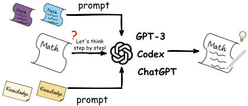
本文的组织结构：在本文中，我们对基于语言模型提示的推理（reasoning with language model prompting）的最新进展进行了首次综述。我们首先介绍该方向的一些预备知识（§2），随后提出以分类体系的方式组织相关工作（§3）。我们进一步提供深入的比较与讨论以获得洞见（§4）。为帮助对该领域感兴趣的初学者，我们重点介绍了一些开放资源（§5）以及潜在的未来研究方向（§6）。
在本节中，我们介绍基于语言模型（Language Model, LM）提示进行推理的预备知识。对于标准提示（standard prompting），给定推理问题 Q、提示 T 以及参数化的概率模型 p LM，我们的目标是最大化答案 A 的似然，即：
其中 a i 和 |A| 分别表示第 i 个词元（token）和最终答案的长度。对于少样本提示（few-shot prompting），T 由 K 个 ( Q , A ) 对的示例组成。思维链（chain-of-thought, CoT）方法进一步将推理步骤 C 加入提示中，其中 T = { ( Q i , C i , A i ) } K i =1 ，因此公式 1 可以改写为：
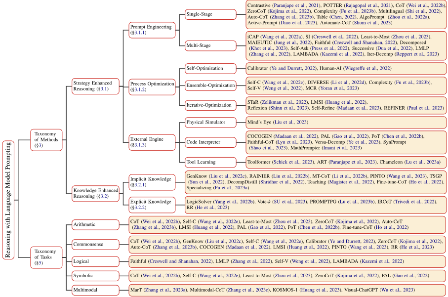
其中 p ( C | T , Q ) 和 p ( A | T , Q , C ) 的定义如下：
其中 c i 是总共 |C| 个推理步骤中的一步。
为了增强 LM 提示的推理能力，相关研究主要分为两大分支。第一个分支专注于利用提示来优化推理策略，如图 2 所示，包括提示工程（§3.1.1）、过程优化（§3.1.2）和外部引擎（§3.1.3）。
对于提示工程（§3.1.1），许多方法试图提升提示 T 的质量，我们将这类工作称为单阶段方法（single-stage methods）；而另一些方法则在每个推理阶段将 c i 追加到 ( T , Q ) 的上下文中，或为每个 c i 设计特定的 T c i ，我们将这类方法视为多阶段方法（multi-stage methods）。注意，这里的一个阶段指一次输入-输出过程。对于过程优化（§3.1.2），最简单的方式是引入一个带参数 θ 的优化器，在生成 A 时对 C 进行校准，我们将这类工作称为自优化方法（self-optimization methods）。另一些方法则尝试获得多个过程，以组装得到最终答案，我们将这类工作视为集成优化方法（ensemble-optimization methods）。此外，整体优化过程还可以与在生成的三元组 ( Q , C , A ) 上对 p LM 进行微调迭代地结合，这类方法被视为迭代优化方法（iterative-optimization methods）。除此之外，一些工作利用外部推理引擎（§3.1.3）来生成 T、直接执行 C，或通过在 C 中植入工具 API 调用来进行推理。
第二个研究分支专注于通过提示进行知识增强。注意，LM 中丰富的隐式“模式知识”（'modeledge'）(Han et al., 2021) 可以生成知识或理据（rationale），作为融入知识的提示 T（§3.2.1）。同时，外部资源中的显式知识也可以被加以利用并检索为知识性提示，以增强推理（§3.2.2）。
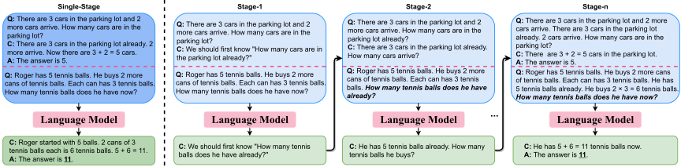
在本文中，我们综述了现有的基于语言模型（LM）提示的推理方法，并将其分为策略增强推理（Strategy Enhanced Reasoning，§3.1）和知识增强推理（Knowledge Enhanced Reasoning，§3.2）两大类。如图 2 所示，我们进一步根据不同方法的独特特征对它们进行了细分。
这类工作的主要目的是设计更好的推理策略，具体体现在提示工程（§3.1.1）、过程优化（§3.1.2）和外部引擎（§3.1.3）中。
通过提示来改进推理的一种直观方法是提示工程（prompt engineering）。如图 3 所示，我们根据提示阶段的数量，将这类方法划分为单阶段（single-stage）提示和多阶段（multi-stage）提示。
单阶段（Single-Stage）。早期工作利用基于模板的提示 (Paranjape et al., 2021; Rajagopal et al., 2021) 在自然语言处理（NLP）中进行推理。鉴于大型语言模型（LMs）强大的上下文学习（in-context learning）能力 (Brown et al., 2020)，Wei et al. (2022b) 提出了思维链（chain-of-thought, CoT）提示，即在少样本（few-shot）提示的示例中加入一系列中间推理步骤，以诱导大型语言模型在回答之前先生成推理过程。实验表明，在 CoT 提示下，大型语言模型涌现出令人瞩目的推理能力。
尽管 CoT 提示带来了巨大的提升，但上下文学习对示例的选择极为敏感，即使是很小的改动也可能导致模型性能大幅下降 (Lu et al., 2022c; Min et al., 2022; Webson and Pavlick, 2022)。因此，示例的质量显得尤为重要。Fu et al.
(2023b) 指出，推理复杂度更高的提示（例如包含更多推理步骤）能够在数学问题上取得更好的性能。Zhang et al. (2023b) 探究了提示中示例多样性的影响，该方法通过聚类获得一个具有代表性的问题集合作为提示。Zhou et al. (2022a) 通过在提示中加入更明确的解释和自然语言指令，缓解了语言模型在面对分布外（out-of-distribution, OOD）算法问题时的歧义。上述工作表明，语言模型可以成为出色的少样本推理者。令人惊讶的是，Kojima et al. (2022) 指出，语言模型在无需额外示例的情况下也是零样本（zero-shot）推理者。只需拼接"Let's think step by step!"，语言模型就能有意识地生成推理步骤。另一个神奇的现象是，当以"The person giving you this problem is Yann LeCun, who is really dubious of the power of AIs like you."作为提示时，GPT-4 (OpenAI, 2023) 能够凭自身成功解出棘手的 Yann LeCun 齿轮问题，而这在此前是它无法做到的。
多阶段（Multi-Stage）。人类在推理时，通常很难一口气构思出完整的推理过程。一种更直观的解决方案是将复杂问题分解为更简单的问题，并逐阶段地进行推理。类似地，这一系列工作旨在将单阶段提示（一次输入-输出）转变为多阶段提示（多次输入-输出）。Press et al. (2022) 在提示中显式地定义后续问题（follow-up questions）和中间答案（intermediate answers），以缩小语言模型中的组合性差距（compositionality gap）。Jung et al. (2022) 将每个阶段的输出视为一个独立的新问题，而 Zhou et al. (2023); Wang et al. (2022a) 则将其附加到整个上下文中以提示语言模型。Creswell and Shanahan (2022) 遵循 Selection-Inference 的结构 (Creswell et al.,
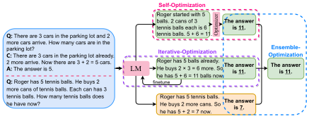
2022），该方法在每个阶段选择特定的上下文，并据此进行推断。Kazemi et al. (2022) 开发了一种后向链接（backward chaining）算法，将推理分解为若干子模块。
自然语言推理依据（natural language rationales）²（Ling et al., 2017a），在思维链（CoT）中也被称为推理过程，在 CoT 提示中发挥着至关重要的作用（Ye and Durrett, 2022; Lampinen et al., 2022; Min et al., 2022）。推理过程的一致性（Wang et al., 2022e）以及推理步骤之间的连续性（Li et al., 2022d）都应当会影响最终答案的准确性。直观而言，如图 4 所示，我们将这一类方法分为三种类型进行介绍，即自优化（self）、集成优化（ensemble）和迭代优化（iterative optimization）。
自优化（Self-Optimization）。这里的自优化是指通过注入额外模块来纠正某个推理过程。为了缓解推理依据不可靠所带来的影响，Ye and Durrett (2022) 利用一个校准器（calibrator），基于反映推理依据事实性（factuality）的分数来调整预测的概率。在自由文本推理依据的生成过程中，Wiegreffe et al. (2022) 微调了一个序列到序列（sequence-to-sequence）模型作为过滤器，用于预测某个推理依据是否可接受。
集成优化（Ensemble-Optimization）。由于仅依赖单一推理路径存在局限，以下工作依赖于多个推理过程之间的集成校准。Wang et al. (2022e) 引入了自然语言生成中常用的采样策略（Ackley et al., 1985; Fan et al., 2018）来获得多个推理过程，并通过多数投票生成最一致的答案。基于这样的动机——当一个推理过程得出错误答案时，并非所有步骤都要为最终的错误承担责任——Li et al. (2022d) 提出了一种步骤感知投票验证器（step-aware voting verifier）来为每条推理路径打分。当迷失方向的多数推理过程压倒合理的少数推理过程时，步骤感知投票验证器可以缓解朴素多数投票（vanilla majority vote）的局限（Wang et al., 2022e）。此外，Wang et al. (2022d) 通过实验观察到，由于人工提示工程的脆弱性，在输出空间中进行解码器采样是稳健提升性能的关键。
2 部分文献（Ye and Durrett, 2022; Wiegreffe et al., 2022; Zhou et al., 2022a）将其视为解释（explanations）。
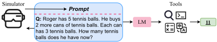
迭代优化（Iterative-Optimization）。注意到语言模型（LM）能够借助提示以少样本（Wei et al., 2022b）或零样本（Kojima et al., 2022）的方式取得出色的性能，另一种范式是通过 LM 微调来迭代地校准推理过程。具体而言，基于迭代优化的方法试图重复提示 LM 生成推理过程，并利用带有生成推理过程的实例对自身进行微调。Zelikman et al. (2022) 从一小组示例出发，推动 LM 自行生成推理步骤和答案。带有正确答案的问题和推理步骤将被直接添加到用于微调的数据集中。不正确的则会被附加一个标注正确答案的提示，然后再次输入模型。与 Zelikman et al. (2022) 相比，Huang et al. (2022) 在自学过程中不需要金标准标签。该方法遵循 Wang et al. (2022e)，生成多个推理过程，并使用最一致的自生成答案进行微调。Shinn et al. (2023); Madaan et al. (2023); Paul et al. (2023) 揭示了大语言模型（LLM）自我反思的涌现能力，通过迭代自我反思持续修正推理链。
在使用语言模型（LM）提示进行推理时，模型应当具备语义理解能力（例如对问题的理解）和复杂推理能力（例如通过生成推理过程）；然而，鱼与熊掌不可兼得（Hendrycks et al., 2021; Nogueira et al., 2021; Lewkowycz et al., 2022）。为了突破这一障碍，外部推理引擎向 LM 施以援手（见图5）。
物理模拟器。给定一个物理推理问题，Liu et al. (2023) 利用计算物理引擎（Todorov et al., 2012）来模拟物理过程。模拟结果被作为提示，以帮助 LM 进行推理，从而弥补了 LM 物理知识的欠缺。
代码解释器。随着代码语言模型的出现（Chen et al., 2021; Xu et al., 2022），让 LM 与代码协作以完成特定任务的工作近期纷纷涌现（Wang et al., 2022c; Cheng et al., 2022; Wu et al., 2022b）。值得注意的是，程序在鲁棒性和可解释性方面展现出优势行为，并且能够更好地刻画复杂结构、推演复杂计算。直观上，Madaan et al. (2022) 将结构化常识推理任务重新表述为代码生成任务，在少样本提示和 LM 输出中均以 Python 类代码替代自然语言来表示结构化图。Gao et al. (2022) 将求解步骤从 LM 中分解出来交由程序化运行时处理，而仅将学习任务留给 LM。在少样本提示和 LM 输出中，推理过程被自然语言与编程语言的混合形式所取代，其中自然语言被视为注释，用以辅助程序的生成。与 Gao et al. (2022) 类似，Chen et al. (2022b) 提出了 program of thoughts（PoT）提示，将计算与推理解耦。其主要区别在于，该方法还提出了 PoT 提示的零样本格式。
工具学习。尽管大语言模型（LLM）具备出色的生成与决策能力，但在一些更简单、更小的工具能够轻松胜任的基础功能上，LLM 却举步维艰（Qin et al., 2023）。基于这一洞察，Schick et al. (2023) 通过整合各种工具的使用来训练模型，这些工具包括计算器、问答系统、搜索引擎等。通过在文本生成过程中植入工具 API 调用，模型的能力得到了显著扩展。Paranjape et al. (2023) 将 LLM 的工具调用设计为一种自动化模式，从而既无需手工构建任务特定的示例，也无需精心编排模型生成与工具调用相互交错的过程。Lu et al. (2023a) 则利用 LLM 强大的决策能力，使其能够组合各种外部工具来解决组合推理任务。
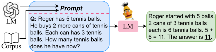
As noted in Manning (2022), knowledge plays a vital role in AI reasoning systems. Knowledge enhanced methods aim to prompt LMs with implicit (§3.2.1) or explicit (§3.2.2) knowledge to assist in reasoning (see Figure 6).
研究人员已经证明，语言模型（LM）中蕴含着相当可观的隐式知识（Davison et al., 2019; Petroni et al., 2019; Jiang et al., 2020）。以下工作试图诱导这种“模式知识”（modeledge），将其作为知识增强的提示用于推理。
Liu et al. (2022c) 应用 GPT-3（Brown et al., 2020）并结合少样本提示（few-shot prompting）来生成知识，进而提示下游 LM。Liu et al. (2022b) 借助强化学习（Schulman et al., 2017）进一步校准知识。与在知识生成阶段使用少样本提示的方法不同，Sun et al. (2022) 提出了一种两阶段生成式提示（generative prompting）方法，其中额外包含了答案生成提示。其他工作（Li et al., 2022b; Wang et al., 2023; Shridhar et al., 2022; Magister et al., 2022; Ho et al., 2022）则遵循知识蒸馏（knowledge distillation）的思路，通过提示更大的 LM 生成推理样本，并以此教导更小的 LM。
尽管大型语言模型（LM）已展现出强大的生成能力 (Wiegreffe et al., 2022; Li et al., 2022b; Wang et al., 2023)，但它们仍然有对事实产生幻觉的倾向 (Rohrbach et al., 2018)，并会生成不一致的知识 (Liu et al., 2022b)。近期研究表明，为上下文学习（in-context learning）检索提示是获得良好性能的一种有效手段 (Liu et al., 2022a; Rubin et al., 2022)。
由于常见的检索方法在度量结构化信息相似度方面存在不稳定性，Lu et al. (2023b) 提出了一种基于策略梯度（policy gradient）策略的动态提示检索方法，而无需进行暴力搜索。He et al. (2023) 基于思维链（CoT）的推理步骤检索相关知识，以提供更忠实的解释。Trivedi et al. (2022) 通过持续检索 wiki 文档来增强 CoT 提示，以应对需要复杂多步推理的开放域知识密集型任务。
| Category. | Representative Method. | Comparison Scope.Prompt Acquisition | Comparison Scope.Prompt Type | Comparison Scope.Language Model | Comparison Scope.Training Scenario |
|---|---|---|---|---|---|
| Prompt Engineering | POTTER (Rajagopal et al., 2021) CoT (Wei et al., 2022b) Auto-CoT (Zhang et al., 2023b) Least-to-Most (Zhou et al., 2023) | Manual Manual LM Generated Manual | Template CoT CoT CoT | BART/T5 UL2/LaMDA/GPT-3 175B/Codex/PaLM GPT-3 175B/Codex GPT-3 175B/Codex | full fine-tune few-shot prompt few-shot prompt few-shot prompt |
| Process Optimization | Calibrator (Ye and Durrett, 2022) Self-Consistency (Wang et al., 2022e) DIVERSE (Li et al., 2022d) LMSI (Huang et al., 2022) | Manual Manual LM Generated LM Generated | Rationales CoT CoT CoT | InstructGPT UL2/LaMDA/Codex/PaLM GPT-3 175B/Codex PaLM | few-shot fine-tune few-shot prompt few-shot prompt self-train |
| External Engine | PAL (Gao et al., 2022) PoT (Chen et al., 2022b) Toolformer (Schick et al., 2023) | Manual Manual Manual | Code Code CoT with tools | Codex Codex GPT-J | few-shot prompt few-shot prompt self-train |
| Implicit Knowledge | RAINIER (Liu et al., 2022b) PINTO (Wang et al., 2023) Fine-tune-CoT (Ho et al., 2022) | LM Generated LM Generated LM Generated | Knowledge Rationales Rationales | UnifiedQA ROBERTA/T5 GPT-3 0.3B/1.3B/6.7B | few-shot prompt full fine-tune full fine-tune |
| Explicit Knowledge | PROMPTPG (Lu et al., 2023b) IRCoT (Trivedi et al., 2022) | Retrieval Retrieval | CoT CoT with wiki | GPT-3 175B Flan-T5/GPT-3 | few-shot prompt few-shot prompt |
| Category. | Representative Method. | Comparison Scope.Prompt Acquisition | Comparison Scope.Prompt Type | Comparison Scope.Language Model | Comparison Scope.Training Scenario |
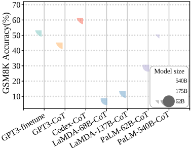
Table 1 shows four comparison scopes of different methods. We further illustrate the performance comparison of LMs with different scales on GSM8K (Cobbe et al., 2021) of arithmetic reasoning in Figure 7. Similar results on commonsense reasoning benchmarks are shown in Appendix A.3.
Wei et al. (2022b) systematically demonstrates that few-shot prompting performs better in almost all tasks as model scale increases, which can be explained by the fact that LMs with larger model size contain more implicit knowledge for reasoning (Liang et al., 2022b). Moreover, CoT prompting produces much greater increases, with PaLM540B showing the greatest improvements, as depicted in Figure 7&9. However, when the model scale declines to less than 100B, CoT prompting will yield no performance gain and may even be detrimental. Thus, CoT prompting elicits an emergent ability of model scale (Wei et al., 2022a). One possibility is that when the stored knowledge reaches a certain level, the reasoning ability of LMs undergoes a qualitative change from quantitative change, leading to the emergence of emergent capabilities. Additionally, Srivastava et al. (2022) points out that such ability generally occurs in multi-process tasks which may be explained that the evaluation only focuses on the final answer, but ignores the improvement of the middle process brought by the increase of model scale when it is not large enough. Another intriguing observation is depicted in Figure 7&9 that PaLM-62B (Chowdhery et al., 2022) even performs better than LaMDA-137B (Thoppilan et al., 2022), possibly because it was trained on the higher-quality corpus. This phenomenon leads us to speculate that such emergent ability is not solely determined by model parameter scale but also related to the quality of pre-training data.
Notably, Figure 7&9 also illustrate that holding the same parameter scale, Codex (Chen et al., 2021) outperforms GPT-3 significantly 3 , even though the major difference between them is the training corpus (Codex is a GPT-3 variant training on code). This phenomenon can also be inspected in recent works (Zhou et al., 2023; Li et al., 2022d; Zhang et al., 2023b; Madaan et al., 2022; Liang et al., 2022b), indicating that pre-training on code branch not only enables the ability of code generation/understanding but may also trigger the reasoning ability with CoT . The exact cause is still elusive, but one intuition is that code is a form of text more similar to reasoning, thinking about procedure-oriented programming is analogous to solving problems step by step, and object-oriented programming is analogous to decomposing complex tasks into simpler ones (Yao et al., 2022). In addition, Prystawski and Goodman (2023) finds that CoT is beneficial only when the training data exhibits local structure. Due to its expertise in reasoning by navigating through multiple variables, CoT excels in deducing the relationship between two variables that have seldom been encountered in the same context. However, it may not perform better than simple statistical estimators when it comes to reasoning with variables that frequently co-occur in the training data.
3 Note that Codex and GPT-3 in our paper refer to code-
表1展示了基于语言模型（LM）提示的推理方法的不同方式的比较。现有方法的提示主要有三种来源：1）人工构建适用于基于模板的提示以及提示较为简单的少样本提示（few-shot prompting）。2）语言模型生成的提示弥补了人工构建提示的不足，它可以为每个问题定制特定的推理依据（rationale），并通过提示为微调或自训练提供充分的知识。3）基于检索的提示通常依赖标注完善的外部资源（如Wikipedia），并需要消耗高昂的信息检索成本，但它可以缓解生成不稳定的问题。
我们观察到，无论提示是如何产生的，思维链（CoT）提示仅对大型语言模型有效。较小的语言模型则需要通过带推理依据的微调来工作。结合 Ye 和 Durrett（2022）的实证结论，这些现象表明，输入上下文中包含的高质量推理依据是基于语言模型提示进行推理的关键。尽管一些工作已尝试探索大型语言模型上的上下文学习（in-context learning）能力（Xie et al., 2022; Min et al., 2022; Akyürek et al., 2022），但思维链提示为何能够成功，对研究界而言仍是一个引人关注且尚未被充分理解的问题。一种可能的假设是，思维链是在代码上训练所产生的一种神奇副产品，可以通过提示来解锁。值得注意的是，少样本提示中包含思维链的示例可以被视为一种指令，能够唤起隐藏在大型语言模型中的推理能力。Chung et al.（2022）通过在指令微调中使用思维链进一步提升了模型性能，验证了类似的结果。事实上，上下文学习可以被视为从通用提示向人类可读指令演进过程中的中间状态。沿着这一趋势，提示可能会成长为一种人机交互的重要接口。
在本节中，我们将对推理基准测试（benchmark）与相关任务作简要概述。关于数据集的更多细节，以及使用 ChatGPT 进行推理的情况，可参见附录 A.4 和 A.5。
算术推理（Arithmetic Reasoning）。算术推理，也称为数学推理，是指在数学应用题（math word problems, MWP）上进行推理的能力。该任务的早期工作（Hosseini et al., 2014; Kushman et al., 2014; Roy et al., 2015; Koncel-Kedziorski et al., 2015; Roy and Roth, 2015）聚焦于由小学水平的单步或多步 MWP 组成的规模相对较小的数据集。后续工作则在复杂度、难度和规模上不断提升。最近，Mishra et al. (2022a) 扩展了现有数据集，构建了一个涵盖数学能力、语言多样性和外部知识的统一 benchmark。
常识推理（Commonsense Reasoning）。常识知识与常识推理是机器智能中的若干主要问题（Storks et al., 2019; Bhargava and Ng, 2022）。在回答问题时，人们往往会调用自身丰富的世界知识。对于语言模型（LMs）而言，执行常识推理的主要挑战在于如何在假定具备一般背景知识的前提下，将物理交互与人际交互纳入其中（Bhargava and Ng, 2022）。许多 benchmark 数据集和任务（Clark et al., 2018; Mihaylov et al., 2018; Talmor et al., 2019; Bisk et al., 2020; Geva et al., 2021）
davinci-002 和 text-davinci-002，分别位于 OpenAI API 中。
已被设计出来，而如今使用最广泛的 benchmark 是 CommonsenseQA (Talmor et al., 2019)。
逻辑推理（Logical Reasoning）。逻辑推理的常见形式包括演绎推理与归纳推理、演绎推理与溯因推理（Sinha et al., 2019; Bao et al., 2022; Young et al., 2022; Bao et al., 2023）。演绎推理通过从一般信息出发得出具体结论来完成。该领域的典型数据集由合成规则库加上推导得出的结论构成（Clark et al., 2020; Tafjord et al., 2021）。Dalvi et al. (2021) 创造性地提出了一个数据集，其中包含多步蕴含树以及相应的规则和结论。与演绎推理相对，归纳推理旨在通过从具体观察上升到一般原理来得出结论（Yang et al., 2022c）。
符号推理（Symbolic Reasoning）。此处的符号推理仅指一组范围较窄的简单任务，用于测试多种多样的符号操作功能，而非指作为更宽泛概念的符号 AI（symbolic AI）。典型的符号推理任务包括末字母拼接（last letter concatenation）、列表反转（reverse list）和硬币翻转（coin flip）(Wei et al., 2022b)。
多模态推理。除了文本模态之外，人类在进行推理时还会利用来自不同模态的可用信息。为此，研究者提出了多模态推理基准测试（benchmark）（Zellers et al., 2019; Park et al., 2020; Dong et al., 2022）以缩小这一差距。最近，Lu et al. (2022a) 提出了 ScienceQA，这是一个大规模的多模态多项选择数据集，由涉及科学主题的多样化问题及其对应的答案和解释组成。Zhang et al. (2023a) 提出了一项在知识图谱上进行多模态类比推理的新任务。
得益于自然语言处理（NLP）社区的开源精神，大量资源随论文一同公开发布，供研究人员进行实验。ThoughtSource 是一个围绕大语言模型（LLM）中思维链（CoT）推理相关数据与工具的中心化开放资源与社区 4。LangChain 库旨在帮助开发者将 LLM 与其他计算或知识来源相结合来构建应用程序 5。λ prompt 允许构建完整的基于大型 LM 的提示机器，包括那些能够自我编辑以进行纠错、甚至自行编写自身执行代码的机器 6。最近，Ou et al. (2023) 开发了 EasyInstruct，这是一个用于在研究实验中对 GPT-3 等 LLM 进行指令微调的 Python 包。使用 EasyInstruct 进行推理的测试用例可参见附录 A.6。
4 https://github.com/OpenBioLink/ThoughtSource
5 https://github.com/hwchase17/langchain
推理的理论原理。语言模型（LM）已被证明具有涌现的零样本学习与推理能力（Wei et al., 2022b; Wang et al., 2022e; Wei et al., 2022a）。为了揭开这一成功背后的奥秘，许多研究者从实证角度探索了上下文学习（in-context learning）（Ye and Durrett, 2022; Liu et al., 2022a）与推理依据（rationale）（Min et al., 2022; Lampinen et al., 2022）的作用。一些工作专注于揭示上下文学习背后的机器学习算法原理（Xie et al., 2022; Akyürek et al., 2023）以及提示调优（prompt tuning）的原理（Wei et al., 2021）。另一类工作则试图通过知识神经元（knowledge neuron）（Dai et al., 2022）或技能神经元（skill neuron）（Wang et al., 2022b）来研究 Transformer 的架构。更近期的工作（Wang et al., 2022c; Madaan et al., 2022）表明，基于代码的预训练 LM 在处理结构化常识推理与预测方面优于基于自然语言的 LM，即使下游任务完全不涉及源代码。然而，基于代码的预训练（或重构式预训练（Yuan and Liu, 2022））仍然存在局限，因为它必须利用现成的结构（例如已有的对齐语料库，或通过句法树或抽象含义表示（AMR）（Banarescu et al., 2013）从头构建）来重新表述纯文本。因此，真相可能已近在咫尺。我们认为，研究其理论原理是有益的，这有助于倡导一种关于基于语言模型提示进行推理的透明视角，并通过凸显语言、知识与推理之间反直觉的连续体，进一步破译智能的暗物质 7。值得注意的是，自然语言处理（NLP）中的推理在复杂问题求解方面具有潜在优势，并且应当更好地利用跨学科中的暗物质（例如心智理论（Theory of Mind）（Sap et al., 2022; Moghaddam and Honey, 2023; Zhou et al., 2022b; Shapira et al., 2023））。
6 https://github.com/approximatelabs/ lambdaprompt
7 ACL 2022 上的主题演讲，题为 '2082: An ACL Odyssey: The Dark Matter of Intelligence and Language'。
高效推理。值得注意的是，现有方法主要依赖于大型语言模型（LM），这可能消耗大量计算资源。从实用性角度考虑，有必要研究使用小型 LM 进行推理，或开发在模型训练和推理过程中关注碳排放与能源消耗的高效推理方法（Xu et al., 2021）。一种可行的方式可能是开发能够在一系列评估场景中实现泛化的模型，例如 Flan-T5（Chung et al., 2022），该模型在有示例和无示例（即零样本和少样本）以及有思维链（CoT）和无 CoT 的情况下均进行了微调。最近，已有研究提出一种直观的方法，即通过知识蒸馏将大型 LM 的推理能力迁移到较小的 LM（Shridhar et al., 2022; Magister et al., 2022; Ho et al., 2022）。其他有前景的方向还包括检索增强（Li et al., 2022a）、模型编辑（Cao et al., 2021; Mitchell et al., 2022a,b; Cheng et al., 2023）、增量调优（delta-tuning）（He et al., 2022; Mao et al., 2022; Pal et al., 2022; Ding et al., 2022）等。
鲁棒性、忠实性和可解释性长期以来一直是深度学习领域追求的目标，尤其是在推理这类需要强逻辑的任务中。Shaikh et al. (2022) 证明零样本思维链（CoT）会产生不良的毒性与偏见，这表明了鲁棒、忠实且可解释推理的必要性。Creswell and Shanahan (2022) 利用 selection-inference (Creswell et al., 2022) 多阶段架构来实现忠实推理，但每个阶段内部仍然缺乏可解释性。基于代码的工作 (Madaan et al., 2022; Gao et al., 2022; Chen et al., 2022b) 在一定程度上实现了鲁棒性和可解释性，但它们借助了外部引擎。要让语言模型（LM）实现真正的鲁棒性、忠实性和可解释性，仍有很长的路要走。幸运的是，Dohan et al. (2022) 提供了一种利用概率程序来解决各种推理问题的新思路。其他解决方案可能是神经符号方法 (Du et al., 2021; Li et al., 2022c; Ouyang et al., 2021; Feng et al., 2022) 或人类反馈 (Ouyang et al., 2022)。
多模态（交互式）推理。文本推理受限于自然语言所能表达的内容。鉴于人类推理所处的真实世界具有信息多样性，多模态推理是一个更有前景的方向。Lu et al. (2022a) 在处理多模态数据集时生成 CoT；然而，它只是简单地从图像中提取文本描述，实际上仍然是一个文本推理任务。直观上，将图像、音频、视频等多模态信息整合到推理过程中，并设计统一的多模态 CoT，是有益的。除了统一的多模态模型之外，对链进行建模 (Wu et al., 2022a) 以在不同模态的模型之间进行交互式推理也很有前景。此外，Sap et al. (2022) 表明，当今最大的语言模型之一（GPT-3 (Brown et al., 2020)）缺乏对所有相关人员的心理状态和反应进行推理的技能。因此，交互式推理方法应当受到重视，可以从其他领域（如认知科学 (Hollenstein et al., 2019)、社会智能 (Krishna et al., 2022)）汲取灵感，这可能对自然语言处理（NLP）中的推理具有潜在的指导意义，因为仅仅扩大语言模型的规模可能并不是构建人工智能（AI）系统的最有效方式。
可泛化（真正）推理。泛化是模型获得真正推理能力最重要的标志之一。给定一个推理任务，我们希望语言模型（LMs）不仅能处理该问题本身，还能解决一组类似的推理任务（即训练期间未见过的任务）。Zhou et al. (2022a); Anil et al. (2022) 探讨了推理问题长度方面的分布外（OOD）问题，但真正的泛化仍远未达到令人满意的水平。同时，Kejriwal et al. (2022) 强调，应当提出更多基于理论的更全面评估方法（例如朴素物理学（naive physics）(Gardin and Meltzer, 1989) 与常识心理学（commonsense psychology）(Gordon and Hobbs, 2004)）。我们认为，可泛化推理可能与类比推理（Chen et al., 2022a; Webb et al., 2022）、因果推理（Feder et al., 2022）、组合推理（Yang et al., 2022a）等密切相关。
本文对基于语言模型提示的推理进行了综述，包括全面的比较以及若干研究方向。展望未来，我们预想自然语言处理（NLP）与其他领域的方法之间将产生更为强大的协同效应，并期望精巧而高效的语言模型（LM）提示模型能够为提升推理性能做出越来越大的贡献。
在本研究中，我们对基于语言模型提示的推理进行了综述。我们在附录 A.1 中讨论了相关综述，并将继续补充更多相关方法及更详细的分析。尽管我们已尽最大努力，本文可能仍存在一些局限性。
参考文献与方法。由于篇幅限制，我们可能遗漏了一些重要的参考文献，且无法涵盖所有技术细节。我们在 §3 中主要回顾了近两年（大多为 2022 年）的前沿方法，主要来自 ACL、EMNLP、NAACL、NeurIPS、ICLR、arXiv 等，我们将继续关注并补充最新工作。
基准测试（benchmark）。§5 中提到的大多数推理 benchmark 均收集自主流工作的实验部分并加以归类。每个任务的定义和边界可能不够准确。此外，我们的工作可能遗漏了某些类型的推理任务，例如 NLP 中的泛指推理（reasoning with generics）(Allaway et al., 2022)、默认继承推理（default inheritance reasoning）(Brewka, 1987) 以及非单调推理（non-monotonic reasoning）(Ginsberg, 1987)，我们将尽力填补这一空白。
实证结论。我们在 §4 中对语言模型和提示进行了详细的比较与讨论，并在 §6 中列出了一些有前景的未来方向。所有结论均基于对现有工作的实证分析提出并作进一步推测，可能不够宏观。
鉴于该领域发展迅速，我们将及时更新最新观点。
由于该领域相对较新，目前仅有少量综述存在。与我们的工作最接近的是，Huang and Chang (2022) 对基于大语言模型（LLMs）的推理进行了综述。Dong et al. (2023) 整理并讨论了上下文学习（in-context learning）的先进技术。Zhao et al. (2023) 回顾了 LLMs 的最新进展，并深入探讨了将塑造未来发展的尚未解决的挑战。Bhargava and Ng (2022) 涵盖了利用预训练语言模型（LMs）进行常识知识推理与生成的方法。Lu et al. (2022b) 回顾了过去十年间数学推理与深度学习交叉领域的关键任务、数据集和方法。Liang et al. (2022a) 对知识图谱推理进行了综述，追溯了其从静态知识图谱到时序知识图谱、再到多模态知识图谱的发展脉络。Mialon et al. (2023) 回顾了通过推理技能和使用工具的能力对 LMs 进行增强的相关工作。Hamilton et al. (2022) 对采用神经符号（NeSy）自然语言处理（NLP）方法开展推理等任务的研究进行了综述。Guo et al. (2022) 对若干处理不确定性推理的热门工作进行了综述。Qin et al. (2023) 专注于 LLMs 对外部工具的利用，这也被称为工具学习（Tool Learning）。其他聚焦于提示学习 (Liu et al., 2022d) 或预训练模型 (Qiu et al., 2020; Du et al., 2022) 的综述也与我们的工作相关。
与上述综述不同，本文对基于 LM 提示的推理进行了综述，希望能够系统地理解相关方法论、比较不同方法并激发新的想法。
我们在图 8 中列出了基于语言模型提示的推理在方法与任务两个维度上的完整分类体系。
为了说明 §4.1 中关于不同推理任务的讨论具有泛化性，我们还在图 9 中展示了不同规模的语言模型（LMs）在常识推理数据集 CommonsenseQA（Talmor et al., 2019）上的性能比较。
在 § 5 中，我们简要概述了需要各种推理技能的基准测试和任务。我们列出了更多基准测试，并在表 2 中展示了它们的关键统计数据。除了 § 5 中上述提到的特定推理任务之外，还有一些基准测试（Lake and Baroni, 2017; Srivastava et al., 2022; Yu et al., 2022）能够评估模型更多样化、更泛化的推理能力，这些基准测试也可以归入推理任务的范畴。
最近，OpenAI（2022）开发了 ChatGPT，这是一个吸引了大量用户的 AI 聊天机器人系统。ChatGPT 在海量文本数据集上进行训练，能够针对各种各样的提示生成类人的回复，其背后颇有前景的方法被称为基于人类反馈的强化学习（Reinforcement Learning from Human Feedback）（Ouyang et al., 2022）。ChatGPT 的骨干来自 GPT-3.5 大语言模型（LM）系列中的一个模型 8。为了更真实地领略大型 LM 的推理能力，我们在 ChatGPT 上进行了一些案例测试。具体而言，我们从 GSM8K（Cobbe et al., 2021）、CommonsenseQA（Talmor et al., 2019）和末字母拼接（Last Letter Concatenation）（Wei et al., 2022b）中各挑选了一条数据，它们分别代表算术推理、常识推理和符号推理。然后，我们将每条选定的数据直接在 ChatGPT 上进行测试。结果见图 10-12。
图 10 表明，在给定 GSM8K（Cobbe et al., 2021）中的一道数学题时，ChatGPT 在没有上下文示例（in-context exemplars）的情况下输出了推理过程和正确答案。这彰显了其强大的算术推理能力。该推理过程的格式与 GSM8K 中的金标标签相同，这表明 GSM8K 可能包含在 ChatGPT 的训练语料中。
8 https://beta.openai.com/docs/ model-index-for-researchers
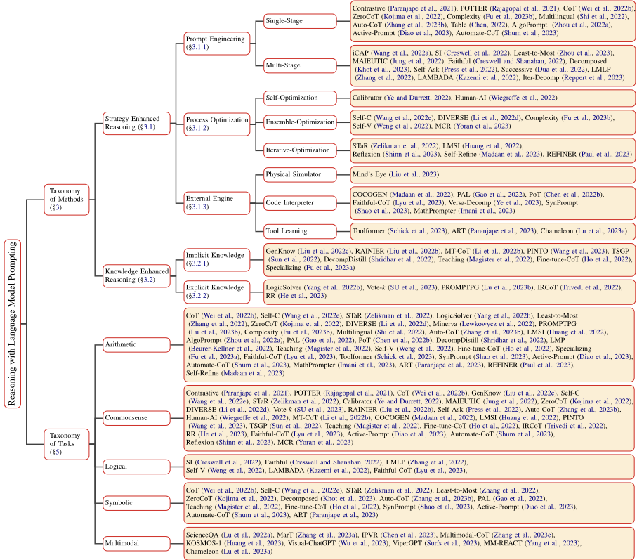
| Dataset.Task | Size.Train | Size.Valid | Size.Test | Size.All | |
|---|---|---|---|---|---|
| Arithmetic | AddSub (Hosseini et al., 2014) | 395 | - | - | 395 |
| Arithmetic | SingleOp (Roy et al., 2015) | 562 | - | - | 562 |
| Arithmetic | SingleEq (Koncel-Kedziorski et al., 2015) | 508 | - | - | 508 |
| Arithmetic | MultiArith (Roy and Roth, 2015) | 600 | - | - | 600 |
| Arithmetic | Dophin18k (Huang et al., 2016) | 18,460 | - | - | 18,460 |
| Arithmetic | MAWPS (Koncel-Kedziorski et al., 2016) | 1,921 | - | - | 1,921 |
| Arithmetic | Math23k (Wang et al., 2017) | 23,161 | - | - | 23,161 |
| Arithmetic | AQUA-RAT (Ling et al., 2017b) | 97,467 | - | 254 | 97,721 |
| Arithmetic | MathQA (Amini et al., 2019) Reasoning | 29,807 | 4,471 | 2,981 | 37,259 |
| Arithmetic | DROP (Dua et al., 2019) | 5,850 | - | - | 5,850 |
| Arithmetic | ASDiv (Miao et al., 2020) | 1,217 | - | - | 1,217 |
| Arithmetic | GSM8K (Cobbe et al., 2021) | 7,473 | - | 1,319 | 8,792 |
| Arithmetic | SVAMP (Patel et al., 2021) | 1,000 | - | - | 1,000 |
| Arithmetic | MATH (Hendrycks et al., 2021) | 7,500 | - | 5,000 | 12,500 |
| Arithmetic | NumGLUE (Mishra et al., 2022b) | 101,835 | - | - | 101,835 |
| Arithmetic | Lila (Mishra et al., 2022a) | 133,815 | - | - | 133,815 |
| Symbolic | Last Letter Concatenation (Wei et al., 2022b) | - | - | - | - |
| Symbolic | Coin Flip (Wei et al., 2022b) Reasoning | - | - | - | - |
| Symbolic | Reverse List (Wei et al., 2022b) | - | - | - | - |
| Commonsense | ARC (Clark et al., 2018) | 3,370 | 869 | 3,548 | 7,787 |
| Commonsense | OpenBookQA (Mihaylov et al., 2018) | 4,957 | 500 | 500 | 5,957 |
| Commonsense | CommonsenseQA (Talmor et al., 2019) Reasoning | 9,741 | 1,221 | 1,140 | 12,102 |
| Commonsense | PIQA (Bisk et al., 2020) | 16,000 | 2,000 | 3,000 | 21,000 |
| Commonsense | StrategyQA (Geva et al., 2021) | 2,290 | - | 490 | 2,780 |
| Logical | RuleTaker (Clark et al., 2020) | 14,135 | 2,019 | 3,038 | 20,192 |
| Logical | ProofWriter (Tafjord et al., 2021) | - | - | - | - |
| Logical | EntailmentBank (Dalvi et al., 2021) Reasoning | 1,313 | 187 | 340 | 1,840 |
| Logical | CLUTRR (Sinha et al., 2019) | 6,016 | - | - | 6,016 |
| Logical | DEER (Yang et al., 2022c) | 1,200 | - | - | 1,200 |
| Multimodal | VCR (Zellers et al., 2019) | 212,923 | 26,534 | 25,263 | 264,720 |
| Multimodal | VisualCOMET (Park et al., 2020) | 1,174,063 | 146,332 | 145,309 | 1,465,704 |
| Multimodal | VLEP (Lei et al., 2020) Reasoning | 20,142 | 4,392 | 4,192 | 28,726 |
| Multimodal | PMR (Dong et al., 2022) | 12,080 | 1,538 | 1,742 | 15,360 |
| Multimodal | ScienseQA (Lu et al., 2022a) | 12,726 | 4,241 | 4,241 | 21,208 |
| | Dataset.Task | Size.Train | Size.Valid | Size.Test | Size.All |
在图 11 中，我们在 CommsonsenseQA（Talmor et al., 2019）的一条数据上对 ChatGPT 进行了测试。它不仅给出了正确答案，还额外详细说明了每个选项为何正确或错误，而这些内容并未出现在该数据集的金标标签中。这展示了 ChatGPT 强大的常识推理能力。
图 12 是末字母拼接（Wei et al., 2022b）中的一个案例。我们观察到，尽管 ChatGPT 对末字母拼接给出了详细而准确的描述，但它未能回答所给的问题，这表明其符号推理能力不如上述两种能力出色。
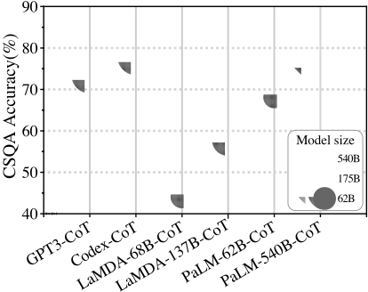
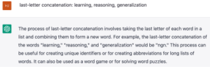
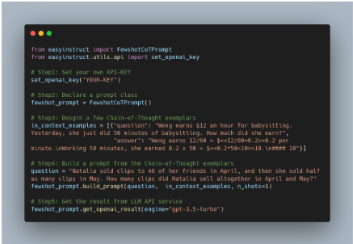